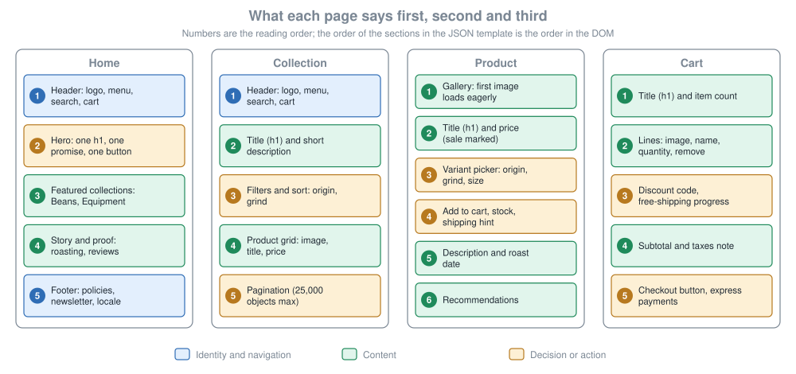
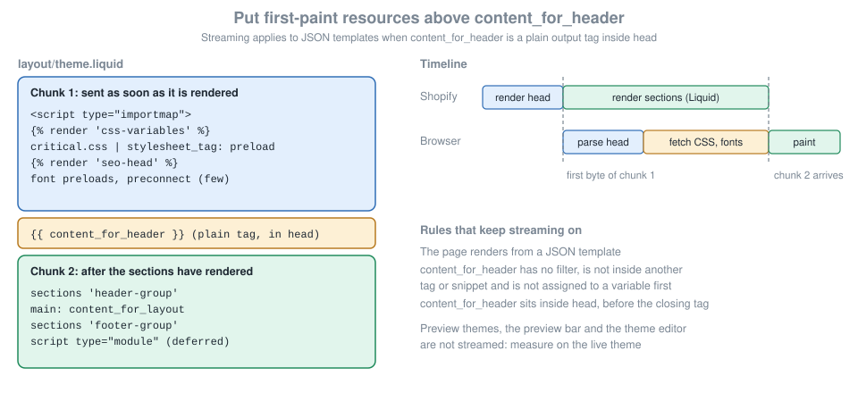

Theme Design, SEO and Performance
|
This content was generated with the assistance of AI and should be verified against the official documentation before being relied on in production. |
This page was written against Online Store 2.0 themes as they work on 2026-10-27, the date it was checked: the reference themes
Skeleton (the default of shopify theme init), Dawn 16.0.0 and Horizon 4.3.0, Shopify CLI 5.0.0 with Theme Check 3.31.0,
Liquid (which is unversioned) and the Ajax API (also unversioned, so it can change at any time). Everything here applies
to every Shopify plan that has the Online Store sales channel. The Ajax API, the Section Rendering API and the theme files
described below exist only for themes that Shopify hosts; a custom storefront built with Hydrogen or the Storefront API
has to produce the same results itself, and the Storefront
API and headless page covers that route.
A theme is judged by four things that are easy to treat separately and are better treated together: whether a visitor
understands each page at a glance (information hierarchy), whether a search engine understands it (SEO), whether it
appears quickly and stays still while it loads (performance), and whether a keyboard or screen reader user can complete a
purchase (accessibility). The same markup decisions serve all four. One h1 per page, content in reading order, images with
dimensions and alternative text, and a cart that works as a plain form before JavaScript enhances it are good for
visitors, crawlers, Lighthouse and assistive technology at the same time. The page ends with the Ajax Cart API, the
mechanism that lets a theme update the cart without a page load, built so that it keeps those four properties.
The running example is the Pocket Coffee shop: Spanish (default) and English storefronts, the product "Single-origin
beans" with 18 variants (origin by grind by size, SKUs such as PC-COL-WHL-250 at 8.90 EUR), the "Starter kit", the Coffee
Club discount, free shipping above 40 EUR and a roast date metafield. This page builds a small Pocket Coffee theme on top of
Skeleton: a head with complete SEO tags, structured data, a robots.txt.liquid, a hero banner that handles the Largest
Contentful Paint image correctly, an accessible price and product page, and a cart drawer driven by the Ajax API.
It sits after the pages on theme architecture, Liquid and sections and theme blocks, which explain the files used here, and before theme tooling and workflow, which covers the commands that upload and check them. The three reference themes are compared in Reference Themes: Skeleton, Dawn and Horizon.
What was run and what was not
Everything below was prepared without a Shopify account, so nothing here was executed against a real store. The table says exactly what ran locally and what is described from Shopify’s documentation as read on 2026-10-27.
| Example | What ran | What did not run |
|---|---|---|
The Pocket Coffee theme (layout, snippets, sections, templates, |
|
Rendering in a store ( |
|
Rendered with LiquidJS 10.30.0, which runs plain Liquid, against plain data and stand-in objects for |
Real |
|
|
Calls to a real cart. The responses used by the tests copy the shape documented for the Ajax API. |
Lighthouse, Core Web Vitals, Search Console, Rich Results Test |
Nothing. |
All of them need a deployed storefront. |
The sample Shopify values (store handles, IDs) that appear in quoted output come from Shopify’s documentation. The only
domain used for Pocket Coffee is pocket-coffee.example.com, a reserved example name.
What the books taught and what changed
Two books cover this ground, and both were written for older themes. Gavin Ballard, The Definitive Guide to Shopify Themes (Apress, 2017), has the design chapters that this page borrows its method from: designing layout and navigation, the product page and its information hierarchy, the home and collection pages, the cart, and then SEO and social sharing and performance. Ivan Djordjevic, Shopify Theme Customization with Liquid (Packt, 2021), has a chapter on the Ajax API. The method is still sound: decide the job of each page, order the content by importance, make the first screen carry the decision. The mechanics changed, and the table lists what to read as history.
| In the books and in older themes | Today |
|---|---|
Static sections and theme settings in |
JSON templates compose sections, section groups hold the header and footer, and the theme editor reorders everything. The information hierarchy is now the |
Microdata and hand-written JSON-LD in the theme |
The |
Page weight, request counts, asset concatenation and YSlow |
Shopify’s CDN serves HTTP/3 with Brotli, minifies CSS and JavaScript, sends Early Hints and streams the HTML. The measures that matter are the Core Web Vitals (LCP, INP, CLS) and the Lighthouse scores that the Theme Store checks. |
Theme Kit, Slate, Grunt and jQuery |
Shopify CLI, Theme Check, native |
Currency and language hacks in JavaScript |
Shopify Markets: locale-aware URLs from |
The cart updated by |
The Ajax Cart API with bundled section rendering: the server returns the re-rendered cart section in the same response. |
The Theme Store’s own requirements shaped parts of this page, so they are quoted where they apply: a minimum average
Lighthouse performance score of 60 and accessibility score of 90, the SEO snippet, no robots.txt.liquid and the
accessibility checklist. They are explained in
the reference themes page.
Page information hierarchy
Information hierarchy is the order in which a page tells its story: what a visitor must understand first, what they must do next and what can wait. It decides the order of the sections in the template, the heading levels, what is above the fold and what a screen reader reads first. Because the DOM order is also the keyboard focus order and the order in which a screen reader reads the page, designing the hierarchy once gives a consistent result for all three.
One job per page
Each template has one job, and the hierarchy follows from it. The four pages that carry a purchase are described in the table with the Pocket Coffee choices; the search page, the 404 page, content pages and the blog follow the same rule with a different job.
| Template | Job | Above the fold | Stays visible or is easy to reach |
|---|---|---|---|
|
Say what the shop sells and send the visitor to a collection or a product. |
Header, one |
Search, cart link, language and country selector, newsletter and policies in the footer. |
|
Let the visitor find the right product. |
Collection title ( |
Filters and sort control (origin and grind for Pocket Coffee), pagination, a way back to all collections. |
|
Make the buying decision and add to cart. |
Gallery with the first image loaded eagerly, product title ( |
Stock and shipping hint (free shipping above 40 EUR), description, roast date, recommendations. |
|
Confirm what will be bought and move to checkout. |
Title and item count, line items with quantity and remove, subtotal, checkout button. |
Discount code field, shipping threshold progress, express payment buttons, order note. |
The figure shows the same four pages as wireframes with the reading order numbered. Blue blocks identify the shop, green blocks carry content and amber blocks ask the visitor to decide or act.

Ballard’s design chapters make the same cut. For the product page he orders imagery, then product details, then the add to cart form, then recommended products; the sequence in the figure is the same with today’s additions (variants as a picker, sale price markup, the roast date metafield). What no longer applies is how the order is encoded.
Encoding the hierarchy in templates and section groups
In an Online Store 2.0 theme the hierarchy lives in the JSON template, and the theme editor can reorder it without code.
The order array is the DOM order. The header and footer are section groups (header-group.json, footer-group.json),
which Skeleton includes in the layout with {% sections 'header-group' %}. A template for the Pocket Coffee home page
needs one section, the hero:
{
"sections": {
"hero": {
"type": "hero-banner",
"settings": {
"heading": "Freshly roasted, shipped in 24 hours",
"button_label": "Shop beans"
}
}
},
"order": ["hero"]
}Source: Shopify docs: JSON templates
The product template keeps the Skeleton convention of a single main section, because everything on the product page
belongs together and is read in one order:
{
"sections": {
"main": {
"type": "product",
"settings": {}
}
},
"order": ["main"]
}Source: Shopify docs: product template
A few rules keep a hierarchy intact as the merchant edits the theme:
-
Give every page exactly one
h1, the title of the thing the page is about: the product title on a product page, the collection title on a collection page, the hero heading on the home page. Shopify’s accessibility guidance requires theh1to identify the main topic and the other headings to follow in sequence, without skipping levels for visual effect. -
Make the first section of the template the one that carries the decision. The
section.indexproperty, which is the 1-based position of a section in its location, lets a section behave differently when it is first (see the hero below). -
Put structure in sections, not in conditionals. A section can be hidden or reordered by the merchant, while an
ifin a layout cannot. -
Keep the product page’s reading order equal to its DOM order. Do not move the add to cart button with CSS
orderorpositionso that it appears before the title; keyboard users follow the DOM. -
Use the
routesobject for every internal URL:routes.root_url,routes.cart_url,routes.search_url,routes.collections_url,routes.all_products_collection_url,routes.cart_add_url,routes.cart_change_url,routes.cart_update_url,routes.cart_clear_url,routes.predictive_search_urlandroutes.product_recommendations_url. A hard-coded/cartlink on a localized storefront, where the cart is/en/cart, sends the visitor back to the default language or market, and Theme Check reports it with theHardcodedRoutescheck.
Source: Shopify docs: routes object
The product page in detail
The product page has the most structure, and Pocket Coffee’s "Single-origin beans" is the hardest case: one product, three options (origin, grind and size) and 18 variants. The section below renders the gallery, the title, the price, a variant selector, the roast date badge, the add to cart form and the description in that order.
{% comment %}
Pocket Coffee product page. Reading order: media, title, price, variant, add to cart, details.
{% endcomment %}
{%- liquid
assign current_variant = product.selected_or_first_available_variant
-%}
<div class="product">
<div class="product__media">
{%- for media in product.media limit: 6 -%}
{%- if media.media_type == 'image' -%}
{%- assign alt = media.alt | default: product.title -%}
{%- if forloop.first -%}
{{ media | image_url: width: 1500 | image_tag: sizes: '(min-width: 750px) 50vw, 100vw', widths: '375, 750, 1100, 1500', loading: 'eager', fetchpriority: 'high', alt: alt }}
{%- else -%}
{{ media | image_url: width: 1500 | image_tag: sizes: '(min-width: 750px) 25vw, 50vw', widths: '375, 750, 1100', loading: 'lazy', alt: alt }}
{%- endif -%}
{%- endif -%}
{%- endfor -%}
</div>
<div class="product__info">
<h1>{{ product.title }}</h1>
{% render 'price', product: product, variant: current_variant %}
{%- assign roast_date = product.metafields.custom.roast_date.value | date: '%-d %B %Y' -%}
{%- if roast_date != blank -%}
<p class="roast-badge">
{{ 'products.roast_date' | t: date: roast_date }}
</p>
{%- endif -%}
{% form 'product', product, id: 'product-form' %}
<label for="variant-id">{{ 'products.variant' | t }}</label>
<select id="variant-id" name="id">
{%- for variant in product.variants -%}
<option
value="{{ variant.id }}"
{% if variant == current_variant %}selected{% endif %}
{% unless variant.available %}disabled{% endunless %}
>
{{- variant.title }} - {{ variant.price | money -}}
</option>
{%- endfor -%}
</select>
<label for="quantity">{{ 'products.quantity' | t }}</label>
<input
type="number"
id="quantity"
name="quantity"
value="1"
min="1"
inputmode="numeric"
autocomplete="off"
>
<button
type="submit"
name="add"
data-add-to-cart
{% unless current_variant.available %}disabled{% endunless %}
>
{%- if current_variant.available -%}
{{ 'products.add_to_cart' | t }}
{%- else -%}
{{ 'products.sold_out' | t }}
{%- endif -%}
</button>
<p class="product__error" role="alert" data-product-error hidden></p>
{% endform %}
<div class="product__description">
{{ product.description }}
</div>
</div>
</div>
{% stylesheet %}
.product {
display: grid;
gap: 2rem;
padding: 0 var(--page-margin);
}
@media (min-width: 750px) {
.product {
grid-template-columns: 1fr 1fr;
}
}
{% endstylesheet %}
{% schema %}
{
"name": "Product",
"settings": [],
"disabled_on": { "groups": ["header", "footer"] }
}
{% endschema %}Source: Shopify docs: product template
What the section does, in the order a visitor meets it:
-
The gallery loops over
product.mediawithlimit: 6, so a product with many images does not render all of them. Only the first image is loaded eagerly and withfetchpriority="high", because it is the Largest Contentful Paint element of the page. The others are lazy. The alternative text is thealtof the media or, when the merchant left it empty, the product title, computed once withassignbecause adefaultfilter placed afterimage_tagarguments would apply to the whole<img>tag and not to the alt text. -
The
h1is the product title. The price comes from thepricesnippet, shown below, so every template that prints a price marks a sale the same way. -
The roast date is a metafield (
custom.roast_date, a date) read once, outside any loop, and formatted with thedatefilter. A metafield read inside a loop over variants is one of the most common causes of a slow server response; see the Liquid performance section. -
The variant picker is a
<select name="id">inside the product form, as in Skeleton, so the form works without JavaScript. Unavailable variants aredisabled. The Single-origin beans product has 18 variants, well below the limit of 250 variants that the Ajax API returns for a product. -
The form has labels with matching
forattributes, a quantity input withinputmode="numeric"and an alert region for errors. The option text of the select carries each variant’s price, so the price of a choice is visible without JavaScript; a theme that rewrites the price when the choice changes has to announce the change, as the accessibility part explains.
The price snippet marks regular and sale prices both visually and for screen readers, which Shopify’s accessibility guidance requires:
{% doc %}
Renders a price so that sighted users and screen reader users get the same information.
@param {product} product - The product whose price is rendered
@param {variant} [variant] - The selected variant, defaults to the first available one
{% enddoc %}
{%- liquid
assign target = variant | default: product.selected_or_first_available_variant
assign on_sale = false
if target.compare_at_price > target.price
assign on_sale = true
endif
-%}
<div class="price" data-price>
{%- if on_sale -%}
<p>
<span class="visually-hidden">{{ 'products.price.regular' | t }}</span>
<s>{{ target.compare_at_price | money }}</s>
<span class="visually-hidden">{{ 'products.price.sale' | t }}</span>
<strong>{{ target.price | money }}</strong>
</p>
{%- else -%}
<p>
<span class="visually-hidden">{{ 'products.price.regular' | t }}</span>
<strong>{{ target.price | money }}</strong>
</p>
{%- endif -%}
{%- if target.unit_price_measurement -%}
<p class="price__unit">
<span class="visually-hidden">{{ 'products.price.unit' | t }}</span>
{{ target.unit_price | money }} / {{ target.unit_price_measurement.reference_value }}{{ target.unit_price_measurement.reference_unit }}
</p>
{%- endif -%}
</div>The snippet uses a LiquidDoc doc block to declare its parameters. The Coffee Club discount does not change the variant’s
price: automatic discounts are applied in the cart and at checkout, which is why the cart drawer prints
item.final_line_price. The Theme Store requires that a theme shows discounts in the cart.
Navigation, search and the 404 page
Navigation is part of the hierarchy. Keep the main menu shallow, since each additional level doubles the work for a
keyboard user, and render one menu that adapts with CSS rather than two copies for mobile and desktop, which Shopify
lists as a performance recommendation because duplicated menus double the DOM size. Wrap navigation in a nav element,
mark the current page with aria-current, and do not use role="menu" for site navigation. The search page and the
404 page each need a clear next action: a search box and links back to the collections, not a dead end.
Ballard’s guidance on categories, filtering, sorting and pagination for collection pages carries over unchanged. Two platform details matter now: Shopify limits pagination of arrays of objects to 25,000 objects, and a count query stops at 25,001, which signals "more than 25,000". If a collection is that deep, the hierarchy needs more filters, not deeper paging.
Pitfalls
-
Several
h1elements, or a logo marked ash1on every page, make the page topic ambiguous. Skeleton prints the shop name in anh2in its header for this reason. -
Skeleton’s layout has no
mainelement and no skip link, and Horizon’s layout renders amain. Check the layout of the theme you start from; the accessibility part adds both. -
A hero image that is a CSS background cannot be discovered early by the browser and has no alternative text. Use an
img. -
Content that exists only after JavaScript runs (a product description fetched by
fetch) is later to paint and later to be understood by crawlers than server-rendered Liquid.
SEO in the theme
Search engine optimization splits between what the theme controls and what the merchant controls in the admin. A theme
that outputs the right tags makes the merchant’s work count: the page title and meta description a merchant types in the
admin do nothing unless the layout prints page_title and page_description.
| Signal | Who controls it | Where |
|---|---|---|
Title tag and meta description |
The merchant writes them per product, collection, page and article in the admin. The theme prints them. |
|
Canonical URL |
The platform computes it; the theme prints it. |
|
Open Graph and Twitter cards |
The theme. |
A snippet in the head, with |
Structured data |
The theme, with the |
JSON-LD scripts in the head or in a section. |
|
Shopify adds them automatically when the store uses Markets. |
They come from |
|
The platform. The theme has no template for it. |
|
|
The platform generates a default; a theme may replace it with |
|
Image alternative text, URL handles, redirects |
The merchant, in the admin. |
Read in the theme through |
The head: title, description and canonical
Shopify’s SEO metadata guide names three tags that every theme must print in the <head>: the title, the meta
description and the canonical link. The Theme Store requires this snippet in every theme. The code below is the guide’s
own layout example.
<head>
<title>
{{ page_title -}}
{%- if current_tags %} – tagged "{{ current_tags | join: ', ' }}"{% endif -%}
{%- if current_page != 1 %} – Page {{ current_page }}{% endif -%}
{%- unless page_title contains shop.name %} – {{ shop.name }}{% endunless -%}
</title>
{% if page_description %}
<meta name="description" content="{{ page_description | escape }}" />
{% endif %}
<link rel="canonical" href="{{ canonical_url }}" />
</head>Line by line:
-
page_titleis a global object that holds the page title for search engine listings and social previews. The merchant edits it in the admin, in the search engine listing fields of a product, collection, page or article (the Help Center page that describes them blocks automated requests and could not be opened, so what Shopify uses when the field is empty is not stated here, and the theme should not assume it). The suffixes keep titles unique across pagination (current_page) and tag filtering (current_tags), and the last line appends the shop name unless the title already contains it. -
page_descriptionis the matching global object for the description. It is printed only when present, and it goes throughescapebecause it is merchant-typed text placed in an attribute. -
canonical_urlis the URL that search engines should treat as the page’s main address. Duplicate URLs are unavoidable in a shop: a product can be reached through a collection path or with a?variant=parameter, and a collection through sort and filter parameters. Print the object as it is, and do not build a canonical fromrequest.pathorrequest.origin: the platform knows the canonical rules and a hand-made value can contradict them. Google treatsrel="canonical"as a strong signal but not a directive (redirects are stronger and sitemap inclusion is weaker), so it works best when the rest of the signals (internal links, the sitemap, thehreflangset) point to the same URL.
Skeleton keeps these tags in a meta-tags snippet, and Dawn prints the title and canonical in layout/theme.liquid and the
social tags in its own meta-tags snippet. The Pocket Coffee theme uses one seo-head snippet that renders from the
layout ({% render 'seo-head' %}), so the SEO tags have a single owner. It is shown in full after the next two
subsections, because it also prints the social tags and the structured data.
Open Graph and Twitter cards
Social platforms read Open Graph (og:) and Twitter card (twitter:) tags to build link previews. The page_image
object holds the image Shopify picked for the page (the product’s featured image, the collection image, the article
image), and it is an image object, so it needs a width or a height when passed to image_url: the filter returns an
error when neither is given, and it never enlarges an image beyond its original size. A width of 1200 is the usual
Open Graph size. image_url returns a protocol-relative URL (it starts with //), so the snippet prepends https:.
og:type follows request.page_type: product for product pages, article for articles and website otherwise.
Structured data
Structured data tells search engines what a page contains in a machine-readable vocabulary (schema.org). Shopify provides a filter that does the hard part for products and articles.
<script type="application/ld+json">
{{ product | structured_data }}
</script>The structured_data filter works on the product and article objects. A product with no variants becomes a schema.org
Product; a product with variants becomes a ProductGroup. An article becomes an Article. The documented output for a
single-variant product contains @context, an @id such as /products/crocodile-tears#product, the Brand, the name,
description, image and an offers object with an Offer, its availability and price.
Rules that keep structured data valid:
-
Output it once per page. Skeleton prints the product markup from its
meta-tagssnippet, while Dawn prints{{ product | structured_data }}inside its product sections (the main product, the featured product) and{{ article | structured_data }}in its article section. If a theme and an app both print product markup the page carries twoProductentities that can disagree. The Pocket Coffee snippet prints it forrequest.page_typeequal toproductand the product section prints nothing. -
In a multi-currency store the offer’s
priceCurrencyhas to be the currency the visitor sees,cart.currency, and not the shop currency; Shopify’s multi-currency guide says so for any structured data you output for products. Inspect the offers that thestructured_datafilter prints in a store with a second currency (Pocket Coffee sells in USD as well as EUR), and when you write product markup by hand setpriceCurrencyfromcart.currency.iso_codeand read prices through Liquid, because contextual prices differ per market and a base price converted by hand is wrong. -
The
jsonfilter is the way to put a Liquid value into a JSON-LD script: it adds the quotes and escapes characters. When applied to aproductobject it omitsinventory_quantityandinventory_policyfor stores created after 2017-12-05, which keeps stock quantities away from bots and crawlers that have no access to the store. -
Google’s product snippet and merchant listing documentation says which properties unlock rich results (price, availability, ratings and so on). The
structured_dataoutput covers the basics; ratings and reviews come from the app that holds them and must be added to the same entity, not to a second one.
Shopify’s requirements page still tells theme authors to test with Google’s Structured Data Testing Tool. That address now redirects to Google’s general structured data documentation, which recommends the Rich Results Test for validating markup; the Schema Markup Validator at schema.org checks the vocabulary itself.
What the filter does not cover is the shop itself and the page’s position in the site. The Pocket Coffee theme adds an
Organization and a WebSite entity on the home page and a BreadcrumbList on product pages. They use only standard
Liquid filters (json, append, prepend), so they can be rendered outside a store:
{% # Organization and WebSite markup for the home page only %}
<script type="application/ld+json">
{
"@context": "https://schema.org",
"@graph": [
{
"@type": "Organization",
"@id": {{ request.origin | append: '/#organization' | json }},
"name": {{ shop.name | json }},
"url": {{ request.origin | json }}
},
{
"@type": "WebSite",
"@id": {{ request.origin | append: '/#website' | json }},
"name": {{ shop.name | json }},
"url": {{ request.origin | json }},
"publisher": { "@id": {{ request.origin | append: '/#organization' | json }} },
"inLanguage": {{ request.locale.iso_code | json }}
}
]
}
</script>{% # BreadcrumbList for a product, using the collection the visitor came from when there is one %}
{%- liquid
assign position = 1
-%}
<script type="application/ld+json">
{
"@context": "https://schema.org",
"@type": "BreadcrumbList",
"itemListElement": [
{
"@type": "ListItem",
"position": 1,
"name": {{ shop.name | json }},
"item": {{ request.origin | json }}
}
{%- if collection != blank -%}
,{
"@type": "ListItem",
"position": 2,
"name": {{ collection.title | json }},
"item": {{ collection.url | prepend: request.origin | json }}
}
{%- assign position = 3 -%}
{%- else -%}
{%- assign position = 2 -%}
{%- endif -%}
,{
"@type": "ListItem",
"position": {{ position }},
"name": {{ product.title | json }}
}
]
}
</script>Source: Shopify docs: json filter
Rendered with LiquidJS against plain data (the shop name, request.origin and a collection and product for the
breadcrumbs), then parsed to prove the output is valid JSON, the result is:
json-ld-site: valid JSON, @type = Organization+WebSite
{"@context":"https://schema.org","@graph":[{"@type":"Organization","@id":"https://pocket-coffee.example.com/#organization","name":"Pocket Coffee","url":"https://pocket-coffee.example.com"},{"@type":"WebSite","@id":"https://pocket-coffee.example.com/#website","name":"Pocket Coffee","url":"https://pocket-coffee.example.com","publisher":{"@id":"https://pocket-coffee.example.com/#organization"},"inLanguage":"es"}]}
json-ld-breadcrumbs: valid JSON, @type = BreadcrumbList
{
"@context": "https://schema.org",
"@type": "BreadcrumbList",
"itemListElement": [
{
"@type": "ListItem",
"position": 1,
"name": "Pocket Coffee",
"item": "https://pocket-coffee.example.com"
},
{
"@type": "ListItem",
"position": 2,
"name": "Beans",
"item": "https://pocket-coffee.example.com/collections/beans"
},
{
"@type": "ListItem",
"position": 3,
"name": "Single-origin beans"
}
]
}
no collection -> 1:Pocket Coffee > 2:Single-origin beansThe breadcrumb snippet uses the collection object only when it is present: a product reached from a collection page has
that context, and a product opened by its direct URL does not, so the list is one level shorter, as the second check shows.
The last item has no item URL, which schema.org and Google allow for the current page.
The complete head snippet
The snippet below is rendered from the layout and holds everything above: the character set and viewport (zoom stays enabled, as the accessibility guidance requires), title, description, canonical, social tags and one structured-data source per page type.
{% # Basics: charset, viewport (zoom stays enabled) %}
<meta charset="utf-8">
<meta name="viewport" content="width=device-width,initial-scale=1">
{% # Title, description and canonical, as in the Shopify SEO metadata guide %}
<title>
{{ page_title }}
{%- if current_tags %} – tagged "{{ current_tags | join: ', ' }}"{% endif -%}
{%- if current_page != 1 %} – Page {{ current_page }}{% endif -%}
{%- unless page_title contains shop.name %} – {{ shop.name }}{% endunless -%}
</title>
{% if page_description %}
<meta name="description" content="{{ page_description | escape }}">
{% endif %}
<link rel="canonical" href="{{ canonical_url }}">
{% # Open Graph and Twitter cards %}
{%- liquid
assign og_title = page_title | default: shop.name
assign og_description = page_description | default: shop.description | default: shop.name
assign og_type = 'website'
if request.page_type == 'product'
assign og_type = 'product'
elsif request.page_type == 'article'
assign og_type = 'article'
endif
-%}
<meta property="og:site_name" content="{{ shop.name | escape }}">
<meta property="og:url" content="{{ canonical_url }}">
<meta property="og:title" content="{{ og_title | escape }}">
<meta property="og:type" content="{{ og_type }}">
<meta property="og:description" content="{{ og_description | escape }}">
{%- if page_image -%}
<meta property="og:image" content="https:{{ page_image | image_url: width: 1200 }}">
<meta property="og:image:width" content="{{ page_image.width }}">
<meta property="og:image:height" content="{{ page_image.height }}">
{%- endif -%}
<meta name="twitter:card" content="summary_large_image">
<meta name="twitter:title" content="{{ og_title | escape }}">
<meta name="twitter:description" content="{{ og_description | escape }}">
{% # Structured data: one source per page type, never the same markup twice %}
{%- case request.page_type -%}
{%- when 'index' -%}
{% render 'json-ld-site' %}
{%- when 'product' -%}
<script type="application/ld+json">
{{ product | structured_data }}
</script>
{% render 'json-ld-breadcrumbs', collection: collection, product: product %}
{%- when 'article' -%}
<script type="application/ld+json">
{{ article | structured_data }}
</script>
{%- endcase -%}hreflang and Markets
Pocket Coffee has a Spanish storefront (the default) and an English one. Search engines use hreflang annotations to send
each visitor to the right language or region. When the store uses Shopify Markets, Shopify adds the tags automatically
through {{ content_for_header }}, which the layout prints in the <head>; the tags follow each market’s languages and
regions (fr-ca, en-us for a country market, fr for a broader one), update when markets change and stay in sync with
the page’s canonical URL.
A theme or an app that adds its own hreflang tags on top of the automatic ones creates duplicate or conflicting
annotations that can hurt rankings. If you must manage them yourself (an app already prints them, or you link versions
across separate stores), turn off Automatic hreflang tags in Online store > Preferences, in the Social sharing and SEO
section, and build the tags from the localization object rather than from hard-coded domains or handles, since a
resource’s handle can differ in each language. Each localized URL must reference itself as its own canonical.
The markets and domains side is covered in Markets and Internationalization.
Sitemaps
Shopify generates the sitemap. It is served at /sitemap.xml, and the sitemap object that robots.txt.liquid prints
shows the directive as Sitemap: https://your-store.myshopify.com/sitemap.xml. None of the reference themes has a sitemap
template, so the theme’s job is to keep the URLs that the sitemap lists correct: valid canonical URLs, no duplicate paths and pages that
return real content.
Google’s rules for sitemaps are the ones to design around: a single sitemap may contain up to 50,000 URLs or 50 MB
uncompressed, and a larger site uses several sitemaps listed in a sitemap index file. Submit the sitemap URL in Google
Search Console; a domain is a separate property there, so a store with several domains submits the sitemap of each one.
The Sitemap: line in robots.txt lets crawlers find it without a
submission.
Shopify’s Help Center pages on the structure of the generated sitemap (which child sitemaps it contains and how many URLs
each holds) and on hiding a resource from search engines could not be opened, because the site blocks automated
requests; they are therefore not summarized here, and the sitemap should be inspected in the
browser at /sitemap.xml. A headless storefront is served by its own code, so its sitemap is a route that code has to
provide.
robots.txt
robots.txt tells crawlers which URLs they may request. Shopify generates a default file that works for most shops. A
theme can replace it by adding templates/robots.txt.liquid, which cannot be a JSON template, and which Shopify does not
include in any theme by default. The Theme Store forbids the template in submitted themes, so it is a store-specific
customization, not something a distributed theme ships.
The template can use only six Liquid objects:
| Object | What it holds |
|---|---|
|
The default rule groups, in |
|
One group: a |
|
One directive ( |
|
The crawler a group applies to, with a |
|
The |
|
The current request, used for host-specific rules with |
Shopify strongly recommends using these objects instead of replacing the file with plain text, because adding the
template replaces the generated output and the output of the template does not always match the generated file exactly.
Before publishing, save a copy of the current /robots.txt and compare it with the rendered result.
Pocket Coffee wants crawlers to skip the sorted views of a collection (?sort_by= URLs duplicate the unsorted page), so it
adds one rule to the * group. Shopify’s example also adds its literal rule inside the loop; the template here appends
an explicit line break to the literal rule, so it can never run into the line that follows, whatever the rule objects
print.
{%- capture newline %}
{% endcapture -%}
{%- for group in robots.default_groups -%}
{{- group.user_agent }}
{%- for rule in group.rules -%}
{{ rule }}
{%- endfor -%}
{%- if group.user_agent.value == '*' -%}
{{ 'Disallow: /*?sort_by=*' | append: newline }}
{%- endif -%}
{%- if group.sitemap != blank -%}
{{ group.sitemap }}
{%- endif -%}
{% endfor %}LiquidJS rendered this template against stand-in objects that mimic two default groups (the real ones come from Shopify, and this is not evidence of Shopify’s output), with the result:
--- robots.txt ---
User-agent: *
Disallow: /admin
Disallow: /cart
Disallow: /*?sort_by=*
Sitemap: https://pocket-coffee.example.com/sitemap.xml
User-agent: adsbot-google
Disallow: /checkoutThe same page documents the other customizations, all variations of the loop above. To remove a default rule, skip it inside the inner loop:
{% for group in robots.default_groups %}
{{- group.user_agent }}
{%- for rule in group.rules -%}
{%- unless rule.directive == 'Disallow' and rule.value == '/policies/' -%}
{{ rule }}
{%- endunless -%}
{%- endfor -%}
{%- if group.sitemap != blank -%}
{{ group.sitemap }}
{%- endif -%}
{% endfor %}To give one market a different crawl policy, compare request.host inside the loop (for example
{%- if request.host == 'example.fr' -%} followed by a Disallow: /en/ line). Do this only when the store has distinct
domains per market. Rules for crawlers that are not in the default set are plain text outside the loop:
User-agent: discobot
Disallow: /
Sitemap: [sitemap-url]robots.txt controls crawling, not indexing. Google states that the file is not a mechanism for keeping a page out of
Google: to keep a page out, block indexing with noindex or password-protect the page. Do not block a URL in
robots.txt and also rely on noindex on it, because a crawler that may not fetch the page cannot read the tag.
URLs, handles and duplicate content
Online Store URLs follow fixed patterns, as every example in the documentation shows (/products/handle,
/collections/handle, /cart, /search); what the merchant controls is the handle, the last path segment. Duplicate content comes from parameters that
change the view (?sort_by=, ?variant=, filters and page), and the tools against it are the canonical URL, the
default robots.txt and, for sorted views, a rule such as the one above. Keep handles short, lowercase and stable, since
changing one changes the URL. The admin has a URL redirects feature for old addresses, but its Help Center page could not
be opened here, so it is not described. A theme should still never link to its own redirected URLs.
SEO checklist for the theme
| Check | How |
|---|---|
One |
View source on a product, a collection, a page and a paginated collection; the snippet above prints each once. |
Structured data valid and printed once |
Rich Results Test on a product URL; the page should show one |
One |
Neither Theme Check nor the tests on this page enforce it; check the page outline in the browser’s accessibility tree or with an accessibility tool. |
|
Look for |
Sitemap reachable |
Open |
|
Compare |
Images have dimensions and alt text |
Theme Check |
Image and asset performance
Performance on a Shopify theme is two problems with two different owners. The platform owns the network: the CDN, the compression, the server rendering and the early delivery of resources. The theme owns what the browser is asked to do with what it receives: which image is the main one, how big it is, what blocks rendering, how much JavaScript runs. This part covers the measures first and then the controls the theme has, in the order that moves the numbers most.
The metrics and the thresholds
The Core Web Vitals are the three metrics that Google uses as a ranking signal and that Shopify’s guidance is organized around. Google’s thresholds, measured at the 75th percentile of page loads and segmented across mobile and desktop, are:
| Metric | What it measures | Good | Usual cause in a theme |
|---|---|---|---|
Largest Contentful Paint (LCP) |
When the largest element in the initial viewport finishes rendering, usually the hero or the product image. |
2.5 seconds or less |
A lazy-loaded or late-discovered hero, a huge image, render-blocking CSS or apps, slow Liquid. |
Interaction to Next Paint (INP) |
How long the page takes to respond visibly after a tap or click. |
200 milliseconds or less |
Main-thread JavaScript from the theme and from apps, many stylesheets, a huge DOM. |
Cumulative Layout Shift (CLS) |
How much visible content moves unexpectedly. |
0.1 or less |
Images without dimensions, fonts that swap late, app-injected content without reserved space. |
Source: web.dev: Web Vitals
Shopify adds two supporting metrics that are not scored but locate the cause of a slow LCP: Time to First Byte (TTFB), which on a Shopify storefront is mostly Liquid rendering, and First Contentful Paint (FCP), which render-blocking stylesheets and scripts in the head delay. If the server response is slow, look at the Liquid; if it is fast, look at what the browser does next.
The Theme Store applies two lab scores to a submitted theme: a minimum average Lighthouse performance score of 60 and a minimum average accessibility score of 90, each averaged across the home, product and collection pages for both desktop and mobile, with sections that contain real images and content. Those are lab scores on a benchmark store and entry thresholds, not targets: the Core Web Vitals are measured separately, on real visitors.
What the platform already does
Before optimizing, know what not to redo. Shopify’s performance documentation describes these platform features, all of which work without changes to the theme:
| Feature | What it does and what it means for the theme |
|---|---|
CDN |
A Cloudflare-backed content delivery network. Files are minified and compressed with Brotli and gzip, requests use HTTP/3
and TLS 1.3, and storefront asset URLs are same-origin paths such as |
Versioned asset URLs |
The |
Server-side rendering |
The Storefront Renderer serves storefront requests, which improves cache misses. TTFB is dominated by the theme’s Liquid. |
Streamed HTML |
Eligible pages are sent in two parts: the layout up to |
Minification |
CSS and JavaScript with valid ES5 syntax are minified when requested. Shopify serves the original when the minified file
would be larger or when the file name ends in |
Early Hints |
Shopify sends HTTP 103 hints with |
Speculation rules |
Shopify injects speculation rules for prefetching and prerendering likely next pages in browsers that support them. Themes can add rules; the default rules aim to avoid problems with data use, caching and analytics. |
Import map polyfill |
Shopify includes |
Pagination limit |
Arrays of objects paginate to at most 25,000 objects. |
Images: image_url and image_tag
Images are usually the LCP element, so their loading strategy is the largest single decision. Shopify’s image_url and
image_tag filters do the difficult parts: they produce a srcset, add width and height to avoid layout shift and
serve from the CDN. Using them consistently is the baseline, and everything else builds on it.
image_url returns the CDN URL of an image from an article, collection, image, line_item, product, variant or
country object (or their src). Its parameters are:
| Parameter | Behaviour |
|---|---|
|
Output size in pixels, up to 5760. At least one is required: with neither the filter returns an error. With one, the other is computed from the aspect ratio. An image is never enlarged beyond its original dimensions. |
|
Which part to keep when the requested ratio differs from the original: |
|
|
|
A hex color ( |
|
An integer from 10 to 90; lower values reduce size and visual quality. Omitting it lets Shopify choose by format, which is not the same as 100, and the output is not guaranteed to be byte-identical even when the size matches the source. |
image_tag turns an image_url into an <img> element:
| Parameter | Behaviour |
|---|---|
|
Added from the image URL’s dimensions and aspect ratio by default. Passing a value overrides it; passing |
|
A comma-separated list for the |
|
The HTML |
|
Overrides the generated |
|
When true, sends a |
|
Overrides the default, which is the media alt text, or the resource title for article, collection, line item, product and variant images. |
Any HTML attribute |
A parameter named like an attribute ( |
When the image has a focal point set in the admin, image_tag also adds an object-position style. Without preload,
loading is set to lazy automatically for images in sections further down the page, and the documentation warns not to
lazy-load images above the fold; where the default does not fit, write your own logic with section.index and
section.location.
Source: Shopify docs: image_tag filter
Source: Shopify docs: image_url filter
Shopify’s example of the default output, for {{ product | image_url: width: 200 | image_tag }}, is an <img> with the
CDN src, the alt, a one-entry srcset, and width and height:
<img src="//polinas-potent-potions.myshopify.com/cdn/shop/files/science-beakers-blue-light-new.jpg?v=1683744744&width=200" alt="Health potion" srcset="//polinas-potent-potions.myshopify.com/cdn/shop/files/science-beakers-blue-light-new.jpg?v=1683744744&width=200 200w" width="200" height="133">Source: Shopify docs: image_tag filter
This output comes from the documentation; it was not produced here, because the filter needs a store to render.
The LCP image
For most pages the LCP element is one image: the hero on the home page, the first gallery image on a product page, the collection banner. Shopify lists these as its highest-impact recommendations, in this order of importance:
-
Never lazy-load the LCP image.
loading="lazy"delays an image until layout completes. Load every image that is visible in the initial viewport eagerly. -
Mark the LCP image with
fetchpriority="high", which tells the browser to fetch it before other resources. -
Do not hide it behind a fade-in or reveal animation: the LCP event waits for the animation even after the download ends.
-
Use an
<img>, not a CSSbackground-image, for hero content, so that the browser’s preload scanner discovers it early. -
Render essential content in Liquid and HTML, not in JavaScript.
-
Use
<picture>when the mobile and desktop heroes are different images, instead of two images toggled with CSS, so the browser downloads only the one that matches. -
Preload sparingly: one or two resources that the browser finds late, because every hint competes for the same limited header.
The Pocket Coffee hero section implements these. The first section of a template is above the fold, and section.index
reports a section’s 1-based position within its location, so the section loads its image eagerly and with high priority
only when section.index is 1. section.index is nil for a static section, while the theme editor renders, and in the
Section Rendering API, so the test is written to fail safe: in those contexts the image gets the default behaviour of image_tag
rather than high priority by accident. The section also supports an optional separate mobile image
through a <picture> with a media query, a sizes of 100vw, and an explicit widths list.
{%- liquid
# Only the first section of a template is above the fold. section.index is nil
# for static sections, in the theme editor and in the Section Rendering API,
# so the test must be written to fail safe (eager only when it is 1).
assign is_first = false
if section.index == 1
assign is_first = true
endif
assign sizes = '100vw'
assign widths = '375, 750, 1100, 1500, 1780, 2000, 3000'
-%}
<section class="hero" aria-labelledby="hero-heading-{{ section.id }}">
{%- if section.settings.image != blank -%}
<picture class="hero__media">
{%- if section.settings.image_mobile != blank -%}
<source
media="(max-width: 749px)"
srcset="
{{ section.settings.image_mobile | image_url: width: 375 }} 375w,
{{ section.settings.image_mobile | image_url: width: 750 }} 750w
"
sizes="100vw"
width="{{ section.settings.image_mobile.width }}"
height="{{ section.settings.image_mobile.height }}"
>
{%- endif -%}
{%- if is_first -%}
{{
section.settings.image
| image_url: width: 3000
| image_tag:
sizes: sizes,
widths: widths,
loading: 'eager',
fetchpriority: 'high',
class: 'hero__image'
}}
{%- else -%}
{{
section.settings.image
| image_url: width: 3000
| image_tag: sizes: sizes, widths: widths, class: 'hero__image'
}}
{%- endif -%}
</picture>
{%- endif -%}
<div class="hero__content">
<h1 id="hero-heading-{{ section.id }}">{{ section.settings.heading }}</h1>
{%- if section.settings.text != blank -%}
<p>{{ section.settings.text }}</p>
{%- endif -%}
{%- if section.settings.button_link != blank -%}
<a class="button" href="{{ section.settings.button_link }}">{{ section.settings.button_label }}</a>
{%- endif -%}
</div>
</section>
{% stylesheet %}
.hero {
position: relative;
display: grid;
}
.hero__media,
.hero__content {
grid-area: 1 / 1;
}
.hero__image {
width: 100%;
height: auto;
aspect-ratio: 16 / 9;
object-fit: cover;
}
.hero__content {
align-self: end;
padding: 2rem var(--page-margin);
color: #fff;
background: linear-gradient(transparent, rgb(0 0 0 / 70%));
}
{% endstylesheet %}
{% schema %}
{
"name": "Hero banner",
"settings": [
{ "type": "image_picker", "id": "image", "label": "Image" },
{ "type": "image_picker", "id": "image_mobile", "label": "Mobile image" },
{ "type": "text", "id": "heading", "label": "Heading", "default": "Freshly roasted, shipped in 24 hours" },
{ "type": "textarea", "id": "text", "label": "Text" },
{ "type": "text", "id": "button_label", "label": "Button label", "default": "Shop beans" },
{ "type": "url", "id": "button_link", "label": "Button link" }
],
"presets": [{ "name": "Hero banner" }]
}
{% endschema %}Dawn uses the same idea: its image banner, image with text and slideshow sections compute fetch_priority from
section.index == 1 and pass it to image_tag as fetchpriority. The product gallery of the Pocket Coffee product
section applies it to the first image only, and the rest of the gallery is lazy with a smaller sizes, so the browser
spends its first requests on the image the visitor sees.
Layout order: first-paint resources before content_for_header
Streaming makes the order of the layout part of performance. Everything above {{ content_for_header }} reaches the
browser while the sections are still rendering, so stylesheets, font preloads, the import map and CSS variables that the
first paint needs belong above it, and the browser can download them in that time. A page streams when it renders from a
JSON template, when content_for_header is a plain output tag (no filter, not inside another tag or snippet, not assigned
to a variable first) and when it sits inside <head> before the closing tag. A wrapped, filtered or relocated tag turns
streaming off for every page that uses the layout. Preview themes, the preview bar and the theme editor are not streamed,
so measure on the live theme.

The Pocket Coffee layout follows the figure. The import map, CSS variables, the critical stylesheet (preloaded through
stylesheet_tag: preload: true, which also puts it in the Early Hints header) and the SEO head are above
content_for_header; the header group, the main content, the footer group, the cart drawer and the module script follow.
<!doctype html>
<html lang="{{ request.locale.iso_code }}">
<head>
{% # Import map for the cart modules, above content_for_header so it is part of the first streamed chunk %}
<script type="importmap">
{ "imports": { "cart-api": {{ 'cart-api.js' | asset_url | json }} } }
</script>
{% # Inlined CSS variables and fonts %}
{% render 'css-variables' %}
{% # Critical CSS, loaded synchronously and preloaded through the Link header %}
{{ 'critical.css' | asset_url | stylesheet_tag: preload: true }}
{% # Title, description, canonical, social tags and structured data %}
{% render 'seo-head' %}
{{ content_for_header }}
</head>
<body>
<a class="skip-link" href="#MainContent">{{ 'accessibility.skip_to_content' | t }}</a>
{% sections 'header-group' %}
<main id="MainContent" tabindex="-1">
{{ content_for_layout }}
</main>
{% sections 'footer-group' %}
{% section 'cart-drawer' %}
<script src="{{ 'pocket-cart.js' | asset_url }}" type="module"></script>
</body>
</html>Two cautions go with this layout. The TTFB that a tool reports on a streamed page marks when the first part arrives, not when rendering finishes, so judge server work by the total duration of the document request. And everything above the tag must be cheap Liquid, because Shopify renders it before it can send the first part.
Stylesheets, fonts and scripts
-
Stylesheets. Keep the number of
<link rel="stylesheet">tags low, because each extra stylesheet triggers a style recalculation that hurts INP. Load the critical CSS synchronously.stylesheet_tag: preload: trueadds the preload hint. Shopify subsets the CSS of{% stylesheet %}tags so each page loads only the styles of the sections it renders, so a class must be used only within the file that defines it or files it renders directly. -
Fonts. The
font_facefilter outputs the@font-facerule; Skeleton’scss-variablessnippet calls it withfont_display: 'swap'for each font variant. A web font blocks text rendering until it loads or times out; system fonts avoid the download, and web fonts uploaded to the Shopify CDN avoid the DNS and connection cost of Google Fonts. Usesize-adjustand the other override descriptors on the fallback font to reduce layout shift when the web font swaps in. Theme Check reports a redundantpreconnectto Shopify’s CDN (CdnPreconnect) and manual preloads that a Shopify filter would do better (AssetPreload). -
Scripts. Use
deferfor non-critical scripts,asynconly for independent third-party scripts whose order does not matter, andtype="module"(deferred by default) for the theme’s own modules. Load code on interaction with dynamicimport()inside event listeners. Prefer an import map with bare specifiers over a bundler: the Pocket Coffee layout mapscart-apito its versioned asset URL, sopocket-cart.jscanimport { addToCart } from 'cart-api'and still gets cache busting. Do not load another copy ofes-module-shims. -
Apps. Third-party scripts are the largest source of INP and LCP problems on many stores. Audit every script, remove render-blocking apps and A/B-test anti-flicker snippets that run when no test is active, and reserve space with
min-heightfor app content so that it does not shift the layout. App blocks and app embed blocks of theme app extensions are the supported way for an app to appear in a theme; the older script tags are being retired (scriptTagCreateandscriptTagUpdatereturn an error from 2026-10-01 and Shopify stops injecting script tags into online store pages on 2027-03-01). The Theme App Extensions and Web Pixels page covers the replacement.
Liquid performance
The server time of a page is the time its Liquid takes, and Shopify’s recommendations for it are about how cost grows with the size of the catalog. A theme that is fast with 10 products can be slow with 100.
| Recommendation | Why and how |
|---|---|
Avoid deeply nested loops |
Loops nested across products, variants and options grow quadratically. It is the most common cause of a high TTFB. |
Move metafield access out of loops |
A metafield read inside a loop costs a lookup per iteration; read it once before the loop, and prefer theme settings for
static data. The Pocket Coffee product reads |
Do not over-fetch variants |
Iterating |
Limit what a loop fetches |
A |
Flatten |
Each nested snippet adds overhead, especially inside a loop. Prefer one level of snippets. |
Move repeated work out of loops |
Assign filter results before the loop, assign |
Defer dialog content |
Guard expensive Liquid in dialogs and drawers so it runs only when the component opens. The cart drawer is a static section that re-renders after each change, so it is cheap by construction. |
Use |
Apply different loading strategies above and below the fold. |
Use the Section Rendering API for updates |
Re-render a section through Ajax instead of reloading the page. The Ajax part below does this. |
To see which Liquid line costs time, use the Shopify Theme Inspector for Chrome, and compare the document request’s total duration with its TTFB in DevTools.
Measuring: Theme Check, Lighthouse and field data
Theme Check is the fast, offline half of performance testing: it catches parser-blocking scripts, images without dimensions, remote assets and missing assets in the editor and in CI, before anything is deployed. The whole Pocket Coffee theme passes, also with the strictest preset:
$ shopify theme check
│ 46 files inspected with no offenses found. │
$ shopify theme check -C theme-check:all
│ 46 files inspected with no offenses found. │Source: Shopify docs: Theme Check
To show the checks working, a throwaway snippet was added with five common mistakes: a remote script without defer, a
local script without defer that points at a missing file, an img without dimensions, a hard-coded /cart link and a
remote stylesheet.
<script src="https://cdn.example.com/slider.js"></script>
<script src="{{ 'theme.js' | asset_url }}"></script>
<img src="{{ product.featured_image | image_url: width: 800 }}" alt="">
<a href="/cart">Cart</a>
<link rel="stylesheet" href="https://fonts.example.com/css?family=Work+Sans">
{{ 'missing.css' | asset_url | stylesheet_tag }}Theme Check 3.31.0 reported (the run exits with an error, because the default fail level is error, and the snippet was
deleted afterwards):
line 1 error ParserBlockingScript Avoid parser blocking scripts by adding `defer` or `async` on this tag
line 1 warning RemoteAsset Asset should be served by the Shopify CDN for better performance.
line 2 error MissingAsset 'assets/theme.js' does not exist
line 2 error ParserBlockingScript Avoid parser blocking scripts by adding `defer` or `async` on this tag
line 3 error ImgWidthAndHeight Missing width and height attributes on img tag
line 4 warning HardcodedRoutes Use routes object {{ routes.cart_url }} instead of hardcoding /cart
line 5 warning RemoteAsset Asset should be served by the Shopify CDN for better performance.
line 6 error MissingAsset 'assets/missing.css' does not existThe other half is Lighthouse and real-user data, which need a deployed theme. Shopify recommends:
-
Lighthouse against a development store populated with Shopify’s performance test data, run in CI with the Shopify Lighthouse CI GitHub action, which tests the home page, a product page and a collection page on every pull request. The action connects to the store with the client ID and secret of a Dev Dashboard app, stored as repository secrets.
-
The Shopify Web Performance Dashboard in the admin, which reports the Core Web Vitals from real visitors by page type, device and region.
-
Lab data to debug and field data to decide: use field data to find what to fix, lab data to confirm the fix, and field data again to verify that it landed.
Dawn 16.0.0 and Horizon 4.3.0, the two reference themes with real section libraries, give a measured baseline for Theme Check on this CLI: Dawn has 155 files and 9 warnings (an orphaned snippet, two variable names, two unused assigns, one Liquid complexity warning and three undefined objects) and Horizon has 357 files and 6 warnings (one excessive-settings warning and five unused doc parameters); Skeleton has none.
Performance pitfalls
-
A score from the theme editor preview or a preview theme is not representative, because those are not streamed, and the first visit to a page right after publishing a change can arrive without Early Hints.
-
Apps that cheat Lighthouse (they inject transparent elements or serve different pages to crawlers) improve the lab score and hurt visitors; Shopify tells developers to avoid them.
-
Lazy-loading everything, including the hero, is the most common self-inflicted LCP regression.
image_tagalready makes the right choice for sections far down the page; override it only for the hero. -
A hero built as a CSS background, an animated reveal or a carousel that loads every slide are the other three.
-
A
preloadon every image makes the Early Hints header fill up and pushes out the hints that matter.
Accessibility
An accessible theme can be used by everyone, including people who rely on a keyboard, a screen reader or a switch device. In a shop it also protects revenue: a visitor who cannot reach the add to cart button cannot buy. Shopify’s best practices were written with the Web Content Accessibility Guidelines (WCAG) in mind and are organized by the four principles of WCAG: perceivable, operable, understandable and robust. The general standard, the conformance levels, the legal background and the validation tools are explained in the repository’s Web Accessibility page; this part covers what is specific to a Shopify theme.
Following the best practices does not by itself make a theme accessible, and Shopify says so. Treat the lists as the minimum, test with a keyboard and a screen reader, and use automated tools to catch regressions.
What the Theme Store requires
The Theme Store accessibility requirements are the part that is checked on submission, and they are a good minimum for any theme:
-
Every part of a page is keyboard accessible, including dropdown navigation, and focusable elements show a visible focus state. Keyboard focus order matches the DOM order, top to bottom and left to right.
-
Every image has an
altattribute. Product images useimage.altorimage_tagwith analtargument. -
Form inputs have unique IDs, and labels have
forattributes that match the input ID. -
The HTML is valid.
-
Text contrast is at least 4.5:1 for main body content, and 3:1 for text larger than 18 pt and for non-text elements such as borders and icons.
-
Pointer targets are at least 24 by 24 CSS pixels, except inline body text and elements that meet another exception of WCAG 2.2 target size (minimum). Shopify’s separate best practices page recommends 44 by 44 pixels for primary controls.
-
Headings
h1toh6are visually different from each other. -
The minimum average Lighthouse accessibility score is 90 on the home, product and collection pages, desktop and mobile.
Best practices applied to Pocket Coffee
The table walks through Shopify’s best-practice checklist and shows where the Pocket Coffee theme meets each item, so the code in this page can be read as a worked answer.
| Best practice | Why | In the Pocket Coffee theme |
|---|---|---|
|
Screen readers pronounce text with the right accent; low-vision users must be able to zoom. Do not use |
|
Skip link and a focusable |
Keyboard users skip the header on every page. The container needs |
The layout starts with |
Linear content flow |
No positive |
None in the Pocket Coffee files. The only |
Headings in sequence, one |
Headings convey the outline of the page, not its styling. |
One |
Navigation in |
Assistive technology lists landmarks and announces the current page. Do not use |
The header section wraps the menu in a labelled |
Sale and regular prices marked for screen readers |
A struck-through price is only a visual cue. |
The |
Dynamic price and availability announced |
When a variant change updates the price, |
The product section does not rewrite the price when the select changes: each option’s text carries its price. A script that does rewrite it must write the change to a live region. The add to cart error uses |
Links for navigation, buttons for actions |
Native elements bring keyboard support and semantics. |
|
Forms: labels, |
Every field needs a name, and errors have to be announced and reachable. |
Labels with |
Images: |
A missing |
|
Media does not autoplay |
Motion and sound are disruptive; autoplay can be paused or must be muted. |
No autoplaying media. |
Color and contrast |
4.5:1 for normal text, 3:1 for large text, icons and input borders; color is not the only signal. |
Defined by the theme settings and checked with a contrast tool; the focus outline uses |
Drawers and modals |
Focus moves into the modal, stays inside, Escape closes it and focus returns to the launcher; the role is |
The cart drawer is a native |
Touch targets |
Small targets are hard to hit. |
|
The layout code that provides the skip link and the landmark is shown in the performance part. The header section of the theme, with the labelled navigation and the cart link that carries the item count, is:
<header>
<h2 class="header__title">
{{ shop.name | link_to: routes.root_url }}
</h2>
<nav class="header__menu" aria-label="{{ 'accessibility.main_menu' | t }}">
{%- for link in section.settings.menu.links -%}
<a href="{{ link.url }}"{% if link.current %} aria-current="page"{% endif %}>{{ link.title }}</a>
{%- endfor -%}
</nav>
<div class="header__icons">
{% if shop.customer_accounts_enabled %}
<a href="{{ routes.account_url }}" aria-label="{{ 'accessibility.account' | t }}">
{{ 'icon-account.svg' | inline_asset_content }}
</a>
{% endif %}
<a href="{{ routes.cart_url }}" aria-label="{{ 'cart.title' | t }}">
<sup data-cart-count>{{ cart.item_count }}</sup>
{{ 'icon-cart.svg' | inline_asset_content }}
</a>
</div>
</header>The accessibility lines of critical.css are:
/* Accessibility helpers used by the Pocket Coffee snippets */
.visually-hidden {
position: absolute;
width: 1px;
height: 1px;
margin: -1px;
padding: 0;
overflow: hidden;
clip-path: inset(50%);
white-space: nowrap;
border: 0;
}
.skip-link {
position: absolute;
inset-inline-start: 0;
transform: translateY(-100%);
}
.skip-link:focus {
transform: none;
}
:focus-visible {
outline: 3px solid currentColor;
outline-offset: 2px;
}
@media (prefers-reduced-motion: reduce) {
* {
animation-duration: 0.01ms !important;
transition-duration: 0.01ms !important;
}
}
/* Primary controls are at least 44 by 44 CSS pixels */
button,
.button,
select,
input:not([type='hidden'], [type='radio'], [type='checkbox']) {
min-block-size: 44px;
}
button,
.button {
min-inline-size: 44px;
}The visually-hidden class removes an element from the layout without removing it from the accessibility tree. A
display: none or hidden element is not read by a screen reader, so it is the wrong tool for text that exists for
assistive technology only. The skip link uses a transform instead, so that it exists in the layout and appears when it
receives focus.
The accessible cart drawer
The drawer in the Ajax part is built from the elements that give it accessibility for free. A native <dialog> opened
with showModal() is modal: the rest of the page becomes inert, focus moves into the dialog, Escape closes it and focus
returns to the element that opened it. It is labelled by its heading with aria-labelledby. The status paragraph is
present in the page before any message is written to it, which matters because a live region only announces changes made
after it exists. After a quantity change, focus is placed back on the same input, or on the drawer heading when the line
disappeared, so a keyboard user is not dropped at the top of the page. The DOM tests described in the Ajax part check the
status text and the focus handling after a change; modality, Escape and focus restoration are native browser behaviour of
dialog and were not tested here.
Source: MDN: The dialog element
Testing accessibility
-
Automated: Lighthouse, WAVE and Accessibility Insights for Web, and a CI check with the Shopify Lighthouse CI action, which scores accessibility along with performance on every pull request. Automated tools find only a part of the problems.
-
Valid HTML: the W3C HTML checker on the rendered page; Theme Check’s
LiquidHTMLSyntaxErrorandUnclosedHTMLElementcatch many errors earlier, in the editor. -
Manual: tab through every page and check that the focus indicator is visible, that nothing needs a mouse hover and that the order matches the reading order. Operate the cart, the variant picker and the drawer using only the keyboard, then repeat with a screen reader.
-
A contrast tool for text, icons and input borders.
Dawn 16.0.0 follows the same checklist: it has a skip link to #MainContent and a second skip link on the product gallery
to the product information, and its cart uses a polite live region (aria-live="polite" with role="status") for cart
updates. The merchant’s data entry is part of the result: image_tag takes its default alt from the media alt text, so
the theme can print what the merchant wrote, but it cannot write it.
Source: Shopify docs: image_tag filter
Images, media and the web
Alternative text, dimensions and lazy loading belong to both accessibility and performance, and the repository’s
media optimization section explains the browser side in depth, in particular
native HTML images and lazy loading (srcset,
sizes, loading, fetchpriority and <picture>), which is what image_tag generates.
The Ajax Cart API
The Ajax API is a set of lightweight REST-style endpoints that a Shopify-hosted theme calls from JavaScript, to add products to the cart and update the cart counter, to suggest related products and to suggest products and collections while a visitor types in a search box, all without a page reload. The Cart API is the part used most: it reads and changes the cart of the current session.
The rules that define it:
-
It is only for themes hosted by Shopify. It cannot be used from a custom storefront; a Hydrogen or other headless storefront uses the cart of the Storefront API instead.
-
It is unauthenticated. It needs no access token or client ID, and it works on the cart of the visitor’s current session, so never send an Admin or Storefront token to it.
-
Requests are
GETto read the cart and some product data, andPOSTto change the cart of the current session. Responses are JSON. -
There are no hard rate limits, but it is subject to Shopify’s standard abuse prevention. Repeated failed attempts to add items to the same cart are throttled and return HTTP 429.
-
It cannot read customer or order data or change store data; for that, use the GraphQL Admin API.
-
A product JSON response lists at most 250 variants.
-
It is unversioned, like Liquid: Shopify can change it at any time, so keep the code that calls it in one module (the
cart-api.jsbelow) and test it.
Locale-aware URLs
A store that sells in several languages or countries has localized URLs (/en/cart/add.js), and the Ajax API must be called
on the URL of the language and country the visitor chose, or the visitor is forced back to the default. The global
window.Shopify.routes.root is the base for every Ajax URL. It always ends in /, so plain string concatenation is safe:
var cartContents = fetch(window.Shopify.routes.root + 'cart.js')
.then(response => response.json())
.then(data => { return data });In Liquid the same information is in routes.cart_add_url, routes.cart_change_url, routes.cart_update_url and
routes.cart_clear_url. In the endpoint names below {locale} stands for that root. For Pocket Coffee, whose Spanish
storefront is the default and whose English storefront has a prefix, the add endpoint is /cart/add.js in Spanish and
/en/cart/add.js in English.
The endpoints
| Endpoint | Purpose | Body and result |
|---|---|---|
|
Add one or more variants. |
JSON |
|
Read the cart. |
The cart JSON. All monetary values are in the visitor’s presentment currency, given by the |
|
Update several lines, the note, the attributes or the discounts at once. |
|
|
Change one existing line. |
|
|
Set every quantity to zero. |
Returns the empty cart. |
|
Calculate shipping rates for a destination. |
Prepare returns |
|
A product as JSON, with up to 250 variants. |
Monetary values in the presentment currency. |
|
Recommended products for a product. |
Used for the recommendations block of the product page. |
|
Predictive search suggestions for products, collections, pages and articles. |
Used for a search box that suggests as the visitor types. |
Source: Shopify docs: Cart API reference
Source: Shopify docs: Ajax API reference
Line items: how lines merge and split
The Ajax Cart API behaves according to how Shopify models lines, and several of its surprises come from that.
-
Lines are identified by a
keyof the formvariantId:hash. If the same variant is added again with identical price, properties and selling plan, the lines merge and the quantity grows. If the price differs (for instance because an automatic discount applies), or the properties or the selling plan differ, the items split into separate lines with the samevariant_id. -
Because of that,
variant_idis not unique. To change a line when the cart may hold duplicates, address it by the line itemkey, or byline, the 1-based index. The documentation showschange.jswith a numeric variant ID, a string key and aline; with a key theidvalue must be a string. The Pocket Coffee drawer usesline. -
Line item properties are free-form key/value pairs on a line (an engraving text, a gift message). A request that includes
propertiesoverwrites the whole object, and once set it cannot be changed to an empty object; to clear them remove the line. A property whose name starts with an underscore (_foo) is private: hidden at checkout but visible in the admin order details. The storefront does not hide it in the theme, so filter keys that start with_out ofline_item.propertiesin Liquid. Cart attributes starting with a double underscore (__) are private too, and those do not appear incart.attributesor in the Ajax response, so they need no theme change. -
A selling plan is added with
selling_planand the ID of the plan;change.jssets one with an ID, or removes it withnullor an empty string, and for that operation the line must be addressed withlineandquantityshould be given.parent_idinadd.jsattaches the new line to a parent line, and the response then carries aparent_relationshipwith the parent’s key. -
The quantity of a variant that is added is capped by stock: adding 20 when 10 are available adds 10 and returns an error describing the limit. The line quantity set by
update.jsfor a variant already in the cart is not validated against inventory, so a theme can add more than is available; checkout still validates it. -
Discount codes are applied with the
discountfield ofupdate.js, comma-separated for several, and removed with an empty string. Automatic discounts, such as Pocket Coffee’s Coffee Club rule, need no call: they appear in the line’sdiscountsand infinal_priceandfinal_line_price. Prices in the JSON are integers in the smallest currency unit: the documentation’sitems_subtotal_price: 100100corresponds to the "$1,001.00 CAD" in the live-region text of the same example. Format money in Liquid, not in JavaScript, since the store’s money format may differ fromIntl.NumberFormat; bundled section rendering exists for this.
Source: Shopify docs: Cart API reference
Errors
An error response has an HTTP error status and a JSON body with status, message and description. The cases in the
documentation are:
| Endpoint and situation | HTTP status | Body |
|---|---|---|
|
422 |
|
|
422 |
"The product 'item name' is already sold out." |
|
422 |
"You can’t add more item name to the cart." |
|
422 |
|
|
404 |
The same |
|
400 |
|
|
429 |
Throttled. Handle a response body that is not JSON. |
Source: Shopify docs: Cart API reference
The Section Rendering API and bundled section rendering
A cart change normally has to refresh the cart drawer, the counter in the header and sometimes more. Without help the theme
would fetch cart.js and rebuild HTML in JavaScript, duplicating the Liquid that already renders the cart. The Section
Rendering API lets the theme ask Shopify for the HTML of sections instead:
-
Append
?sections=id1,id2(orsections[]=id1§ions[]=id2) to any page URL to get a JSON object that maps each section ID to its rendered HTML. Up to five sections can be requested. The section renders in the context of the page URL, so/products/{handle}?sections=...renders it with that product and parameters such asqorpageare respected. -
?section_id=idreturns the HTML of one section directly, and answers 404 when the section does not exist. -
A section that fails to render comes back as
null, possibly inside an HTTP 200 response, so code must handlenull. -
Settings cannot be passed: an existing section uses its saved settings, and otherwise defaults are used.
-
A section ID is the file name for a static section (
social.liquidhas the IDsocial; the Pocket Coffee drawer iscart-drawer). For sections in JSON templates or section groups the ID is generated (template--5678__image_banner,sections--1234__header), which is why the markup of a section is wrapped in an element with the IDshopify-section-<id>that scripts can read. -
section.indexisnilwhen sections are rendered through this API.
Bundled section rendering folds that second request into the first. The Cart API endpoints add, change, clear and
update accept a sections parameter (a comma-separated list or an array of up to five IDs) and an optional
sections_url. The response is the usual JSON plus a sections key that maps each ID to HTML rendered after the cart
change, so the page can update in one round trip:
items: [
{ id: 36110175633573, quantity: 2 }
],
sections: "cart-items,cart-icon-bubble,cart-live-region-text,cart-footer",
sections_url: "/cart?some_param=foo"By default the sections render in the context of the current page, taken from the HTTP Referer header; sections_url
chooses another page, must begin with / and may carry query parameters. Rendering happens after the data change, so a
rendering failure does not change the HTTP status of the cart call: the section is null and the cart is already updated.
A sections or sections_url value that is invalid (a sections_url that does not begin with /) makes the whole request
return 400 Bad Request, although the rest of the request may have succeeded.
Dawn does exactly this. Its product-form.js builds a FormData from the add to cart form, appends the IDs of the sections
its cart drawer needs as sections and the current path as sections_url, posts it to routes.cart_add_url and passes the
response to cart.renderContents.
The Pocket Coffee cart
The flow of an add to cart in the Pocket Coffee theme is below. The form works without JavaScript, posting to the cart URL and loading the cart page; the script replaces that with the Ajax request when it runs.
The code has three parts. cart-api.js is a wrapper with no DOM access: it builds locale-aware URLs from
Shopify.routes.root, always sends the sections parameter when asked, turns every error response (an HTTP error status or a
Cart Error body, JSON or not) into one CartError, and can retry the "Cannot find variant" error with a growing delay. It
matches that error by its description, because the documentation gives status 422 for add.js and 404 for update.js. It
is loaded through the import map as cart-api.
/**
* Thin wrapper around the Shopify Ajax Cart API (add.js, change.js, update.js, clear.js, cart.js).
* No DOM access, so it can be unit-tested outside a browser.
*/
export class CartError extends Error {
constructor({ status, message, description }) {
super(description || message || 'Cart Error');
this.name = 'CartError';
this.status = status;
this.description = description || message;
}
}
/** Always build URLs from the locale-aware root, never from a hard-coded "/cart". */
const root = () => globalThis.Shopify?.routes?.root ?? '/';
/** POST endpoints live under cart/ (cart/add.js); the read endpoint is cart.js at the root. */
const endpoint = (name) => `${root()}cart/${name}.js`;
const sleep = (ms) => new Promise((resolve) => setTimeout(resolve, ms));
async function request(url, init = {}) {
const response = await fetch(url, {
...init,
headers: { Accept: 'application/json', ...(init.headers || {}) },
});
let data = null;
try {
data = await response.json();
} catch {
// A throttled (429) or proxied response is not always JSON.
}
// Cart errors carry an HTTP error status and a body with status/message/description.
if (!response.ok || (data && data.status && data.message === 'Cart Error')) {
throw new CartError({
status: data?.status ?? response.status,
message: data?.message ?? 'Cart Error',
description: data?.description ?? response.statusText,
});
}
return data;
}
function post(name, payload, { sections = [], sectionsUrl, signal } = {}) {
const body = { ...payload };
if (sections.length > 0) {
// Bundled section rendering: up to five sections, rendered after the cart change.
body.sections = sections.join(',');
body.sections_url = sectionsUrl ?? globalThis.location?.pathname ?? '/';
}
return request(endpoint(name), {
method: 'POST',
headers: { 'Content-Type': 'application/json' },
body: JSON.stringify(body),
signal,
});
}
/**
* Adds one or more variants. Each item: { id, quantity, properties?, selling_plan? }.
* With retryUnknownVariant, a "Cannot find variant" error is retried with a growing delay
* (products created or published through the Admin API take a few seconds to reach the cart).
*/
export async function addToCart(items, options = {}) {
const { retryUnknownVariant = false, attempts = 3, baseDelayMs = 500 } = options;
for (let attempt = 1; ; attempt += 1) {
try {
return await post('add', { items }, options);
} catch (error) {
// add.js reports an unknown variant as 422, update.js as 404: match the description, not the status.
const unknownVariant = error instanceof CartError && /cannot find variant/i.test(error.description ?? '');
if (!retryUnknownVariant || !unknownVariant || attempt >= attempts) throw error;
await sleep(baseDelayMs * 2 ** (attempt - 1));
}
}
}
/** Changes one existing line by its 1-based position (the safe way to address duplicated variants). */
export function changeLine({ line, quantity, properties, selling_plan }, options = {}) {
const payload = { line, quantity };
if (properties !== undefined) payload.properties = properties;
if (selling_plan !== undefined) payload.selling_plan = selling_plan;
return post('change', payload, options);
}
/** Bulk update: { updates, note, attributes, discount }. update.js does not validate stock for lines already in the cart. */
export function updateCart(payload, options = {}) {
return post('update', payload, options);
}
export function clearCart(options = {}) {
return post('clear', {}, options);
}
export function getCart({ signal } = {}) {
return request(`${root()}cart.js`, { signal });
}Source: Shopify docs: Cart API reference
pocket-cart.js is the DOM layer. It listens on document, so it works for forms and drawers that appear later; it
intercepts the add to cart form (form[action*="/cart/add"]), the quantity inputs and remove links of the drawer, and the
header’s cart link (which still works as a plain link without JavaScript). It sets aria-disabled on the button while a
request is running, and not disabled, so the focus is not lost. It replaces only the cart body of the drawer with the
bundled section HTML, updates every data-cart-count element, and writes the section’s data-announce text into the live
region that already exists in the page. If the section came back null after an add, it falls back to the cart page.
import { addToCart, changeLine, CartError } from 'cart-api';
// Static section rendered by layout/theme.liquid with {% section 'cart-drawer' %}: its id is the file name.
const SECTIONS = ['cart-drawer'];
const drawer = () => document.querySelector('[data-cart-dialog]');
const live = () => document.querySelector('[data-cart-live]');
/** Replaces the cart body with the HTML Shopify rendered in the same response. Null means the section failed to render. */
function applySections(sections) {
const html = sections?.['cart-drawer'];
if (!html) return false;
const incoming = new DOMParser().parseFromString(html, 'text/html');
const body = incoming.querySelector('[data-cart-body]');
const current = document.querySelector('[data-cart-body]');
if (!body || !current) return false;
current.replaceWith(body);
const count = body.dataset.itemCount ?? '0';
document.querySelectorAll('[data-cart-count]').forEach((el) => {
el.textContent = count;
});
if (live()) live().textContent = body.dataset.announce ?? '';
return true;
}
function openDrawer() {
const dialog = drawer();
if (dialog && !dialog.open) dialog.showModal();
}
async function onAddToCart(form) {
const button = form.querySelector('[data-add-to-cart]');
const errorBox = form.querySelector('[data-product-error]');
const data = new FormData(form);
const item = { id: Number(data.get('id')), quantity: Number(data.get('quantity')) || 1 };
button.setAttribute('aria-disabled', 'true');
errorBox.hidden = true;
try {
const result = await addToCart([item], { sections: SECTIONS });
if (applySections(result.sections)) {
openDrawer();
} else {
// Section failed to render: fall back to the cart page, the cart itself is already updated.
window.location.assign(`${window.Shopify.routes.root}cart`);
}
} catch (error) {
errorBox.textContent = error instanceof CartError ? error.description : 'Network error';
errorBox.hidden = false;
} finally {
button.removeAttribute('aria-disabled');
}
}
async function onChangeLine(line, quantity) {
try {
const cart = await changeLine({ line, quantity }, { sections: SECTIONS });
applySections(cart.sections);
// Keep keyboard users in place: back to the same line, or to the heading when it was removed.
const next = document.querySelector(`[data-line-qty][data-line="${line}"]`) ?? document.querySelector('[data-cart-heading]');
next?.focus();
} catch (error) {
if (live()) live().textContent = error instanceof CartError ? error.description : 'Network error';
}
}
document.addEventListener('submit', (event) => {
const form = event.target;
if (!(form instanceof HTMLFormElement) || !form.matches('form[action*="/cart/add"]')) return;
event.preventDefault();
if (form.querySelector('[data-add-to-cart]').getAttribute('aria-disabled') === 'true') return;
onAddToCart(form);
});
document.addEventListener('change', (event) => {
const input = event.target.closest?.('[data-line-qty]');
if (input) onChangeLine(Number(input.dataset.line), Number(input.value));
});
document.addEventListener('click', (event) => {
const remove = event.target.closest?.('[data-line-remove]');
if (remove) {
event.preventDefault();
onChangeLine(Number(remove.dataset.line), 0);
return;
}
const cartLink = event.target.closest?.(`a[href="${window.Shopify.routes.root}cart"]`);
if (cartLink && drawer()) {
event.preventDefault();
openDrawer();
}
if (event.target.closest?.('[data-cart-close]')) drawer()?.close();
});Source: Shopify docs: Cart API reference
The cart drawer is a static section, so its ID is its file name. It prints the item count and an announcement string in
data attributes of the body that the script swaps, which is how the counter and the live region are updated from the same
HTML that Liquid produced. Prices are printed with the money filter.
{% comment %}
Static section (id: cart-drawer). Re-rendered by the Ajax Cart API through bundled section rendering.
{% endcomment %}
{%- assign total = cart.total_price | money -%}
<dialog class="cart-drawer" data-cart-dialog aria-labelledby="cart-drawer-heading">
<div class="cart-drawer__header">
<h2 id="cart-drawer-heading" tabindex="-1" data-cart-heading>{{ 'cart.title' | t }}</h2>
<button type="button" data-cart-close>{{ 'accessibility.close' | t }}</button>
</div>
<p class="visually-hidden" role="status" aria-live="polite" data-cart-live></p>
<div
data-cart-body
data-item-count="{{ cart.item_count }}"
data-announce="{{ 'cart.announce' | t: count: cart.item_count, total: total }}"
>
{%- if cart.item_count == 0 -%}
<p>{{ 'cart.empty' | t }}</p>
{%- else -%}
<ul class="cart-drawer__lines">
{%- for item in cart.items -%}
<li>
{%- if item.image -%}
{%- assign alt = item.image.alt | default: item.product.title -%}
{{ item.image | image_url: width: 160 | image_tag: width: 80, height: 80, loading: 'lazy', alt: alt }}
{%- endif -%}
<div>
<a href="{{ item.url }}">{{ item.product.title }}</a>
<p>{{ item.variant.title }} - {{ item.final_line_price | money }}</p>
<label for="qty-{{ forloop.index }}">{{ 'products.quantity' | t }}</label>
<input
type="number"
id="qty-{{ forloop.index }}"
value="{{ item.quantity }}"
min="0"
inputmode="numeric"
data-line-qty
data-line="{{ forloop.index }}"
>
<a href="{{ item.url_to_remove }}" data-line-remove data-line="{{ forloop.index }}">{{ 'cart.remove' | t }}</a>
</div>
</li>
{%- endfor -%}
</ul>
<p><strong>{{ 'cart.subtotal' | t }}</strong> {{ total }}</p>
<a class="button" href="{{ routes.cart_url }}">{{ 'cart.view_cart' | t }}</a>
<form action="{{ routes.cart_url }}" method="post">
<button type="submit" name="checkout">{{ 'cart.checkout' | t }}</button>
</form>
{%- endif -%}
</div>
</dialog>
{% stylesheet %}
.cart-drawer {
margin: 0 0 0 auto;
height: 100dvh;
max-height: 100dvh;
width: min(28rem, 100vw);
}
{% endstylesheet %}
{% schema %}
{
"name": "Cart drawer",
"settings": []
}
{% endschema %}What was tested
cart-api.js was tested in Node with a stubbed fetch that returns the response shapes documented for the Cart API, and
pocket-cart.js was tested in jsdom against a page with the add form, the header link and the drawer. These tests found a
real defect (the wrapper requested /cart/cart.js for the read endpoint instead of /cart.js), which is fixed in the code
above. No request reached a real store.
$ node cart-api.test.mjs
ok add.js uses the locale-aware root and bundles sections
ok 422 sold out -> CartError
ok 422 Cannot find variant retried once, then added
ok no retry unless retryUnknownVariant is set
ok 429 without a JSON body -> CartError(429)
ok change.js addresses the 1-based line and removes with quantity 0
ok update.js passes discount and note
ok without Shopify.routes the root falls back to /
$ node pocket-cart.test.mjs
ok submit -> add.js with bundled section, body swapped, count and live region updated, drawer opened
ok 422 shows the description in the role=alert region
ok quantity change -> change.js by line, focus returns to the same input
ok remove -> quantity 0, focus moves to the drawer heading
ok header cart link opens the drawer (and still works as a link without JavaScript)Source: Shopify docs: Cart API reference
Other cart calls: note, attributes, discounts and shipping rates
update.js carries everything that is not a quantity change on a single line. For Pocket Coffee the cart note holds a gift
message, an attribute records the grind choice for a starter kit, and a Coffee Club member can enter a code:
import { updateCart } from 'cart-api';
await updateCart({
note: 'Gift for Ada, please include a card.',
attributes: { 'Gift wrap': 'Yes' },
discount: 'COFFEECLUB',
});Source: Shopify docs: Cart API reference
A shipping estimate for the Spain zone uses the prepare and async endpoints with the same shipping_address parameters.
The destination is given as shipping_address[zip], shipping_address[country] and shipping_address[province], URL
encoded:
POST /cart/prepare_shipping_rates.json?shipping_address%5Bzip%5D=28001&shipping_address%5Bcountry%5D=Spain
GET /cart/async_shipping_rates.json?shipping_address%5Bzip%5D=28001&shipping_address%5Bcountry%5D=SpainSource: Shopify docs: Cart API reference
The second call answers null until the rates are ready, so poll with a short, growing delay; a ready response lists
shipping_rates with name, price, code and the delivery fields. These two requests were not run.
Pitfalls
-
Use the variant ID, not the product ID, for
id. Theselect name="id"of the product form already holds the variant ID. -
Set
Content-Type: application/jsononly when the body is JSON, as in the documentation’s first example. With aFormDatabody leave the header out, so the browser adds the multipart boundary itself. -
A hard-coded
/cart/add.jsURL sends the request to the default language’s cart. UseShopify.routes.root. -
Do not rebuild the cart HTML in JavaScript, and do not format money in JavaScript. Ask for the section.
-
Handle
nullsections and non-JSON error responses (HTTP 429) as well as the documented JSON errors. -
section.indexisnilin the Section Rendering API, so code that depends on it for loading hints must tolerate that. -
A cart drawer opened by JavaScript has to remain reachable without it: keep the cart page and the add to cart form working as plain HTML.
-
The Ajax API is not a place to keep secrets or to read customers and orders. Anything that needs them belongs to an app and the Admin API.
References
-
Shopify docs: Accessibility best practices for Shopify themes
-
Shopify docs: Render essential content in Liquid and HTML, not JavaScript
-
Shopify docs: Load first-paint resources before content_for_header
-
Gavin Ballard, The Definitive Guide to Shopify Themes, Apress, 2017: publisher page
-
Ivan Djordjevic, Shopify Theme Customization with Liquid, Packt, 2021: publisher page (unverified)